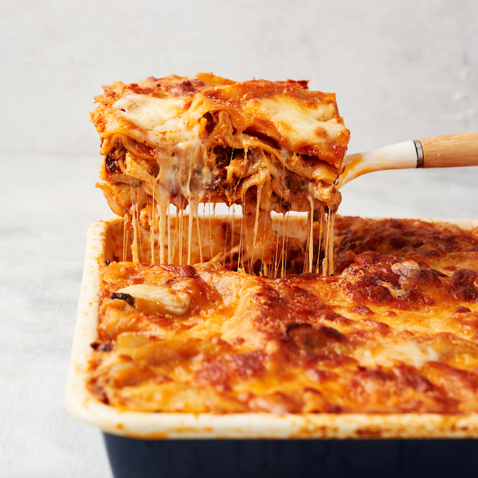
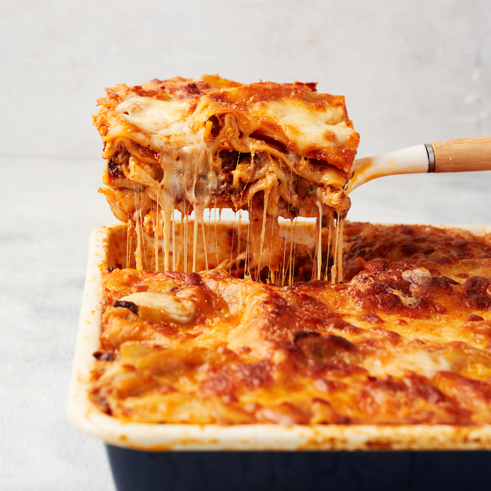

Infoks
| Kogus: | kuuele | Valmistusviis: | küpsetamine |
|---|---|---|---|
| Käik: | põhiroog | Valmistusaeg: | ca 1h |
 

Koostisosad
| Hakklihakaste: | |
|---|---|
| 2 tk | hakitud sibul |
| 1 kimp | hakitud petersell |
| 500 g | hakkliha |
| 2 tk | riivitud porgandit |
| 400 g | konseveeritud tomateid |
| 2 dl | vett |
| näpuotsatäis | soola ja pipart |
| 1 tl | punet |
| Juustukaste: | |
| 50 g | võid |
| 60 g | nisujahu |
| 1 l | piima |
| 100 g | riivitud juustu |
| näpuotsatäis | soola ja pipart |
| Lisaks: | |
| 250 g | lasanjeplaate |
Valmistamine
- Valmista hakklihakaste: pruunista pannil hakkliha, sibul ja porgand. Lisa petersell, tomatid ja vesi. Maitsesta soola ja pipraga. Hauta kastet kaane all 10-15 minutit, maitsesta punega.
- Valmista juustukaste: sulata potis või, lisa jahu ja prae kergelt läbi. Lisa korraga piim ja kuumuta pidevalt segades keemiseni. Keeda 5-6 minutit, pidevalt vispliga segades, kuni kaste on ühtlane ja veidi pakseneb. Maitsesta soola ja pipraga. Tõsta pott tulelt ja sega juurde riivitud juust.
- Võta ahjukindel vorm ja tõsta põhjale kiht juustukastet. Laota peale kiht lasanjeplaate, siis hakklihakastet ja peale juustukastet. Korda 2-3 korda, kuni toiduained on otsas.
- Pealmine plaatide kiht kata juustukastmega ja puista peale veel riivitud juustu. Küpseta 225-kraadise ahju allosas 30-40 minutit.
- Enne serveerimist lase veerand tundi seista - siis on lasanjet parem lõigata.
Tagasiside
| Katsetajad: | Hinnang: | Kommentaarid: |
|---|---|---|
| Mervi | ❤❤❤ | Kastmeid saaks ka poest varuda, muidu hea retsept. |
| Kaja | ❤❤❤❤❤ | Väga hea kirjeldus ja tuli hästi maitsev välja. |
| Daniel | ❤❤❤❤ | Lihtsuses peitub ilu. |
| Liis | ❤❤❤❤❤ | Kasutan kindlasti uuesti, lastele meeldis. |